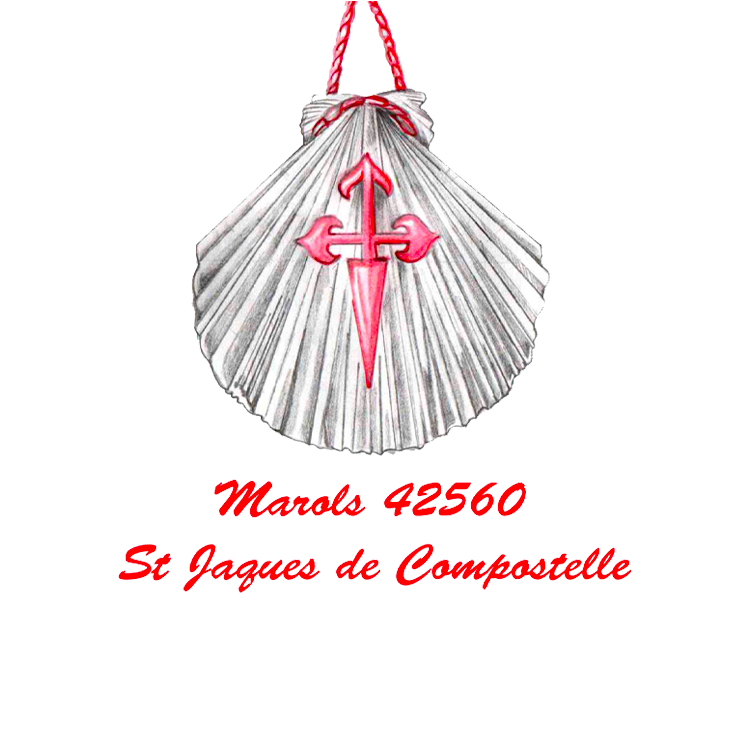
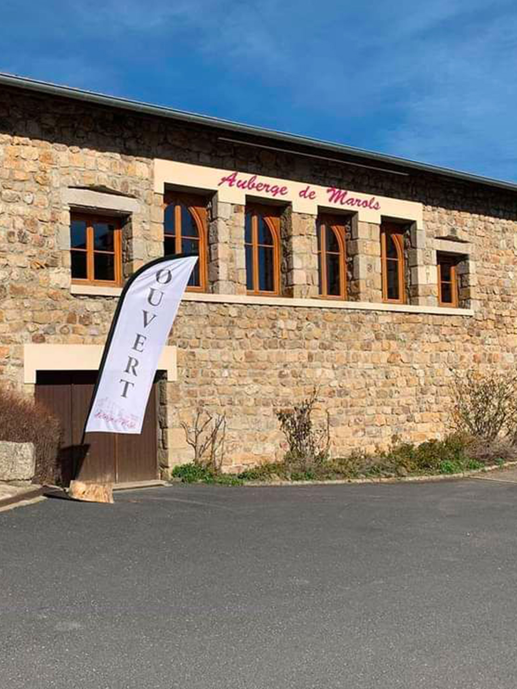
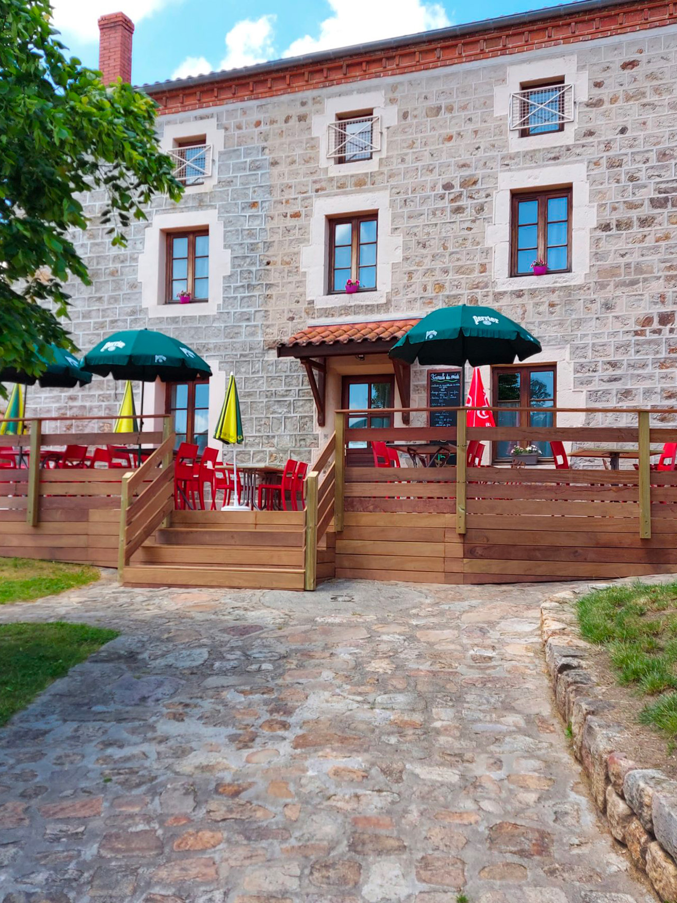
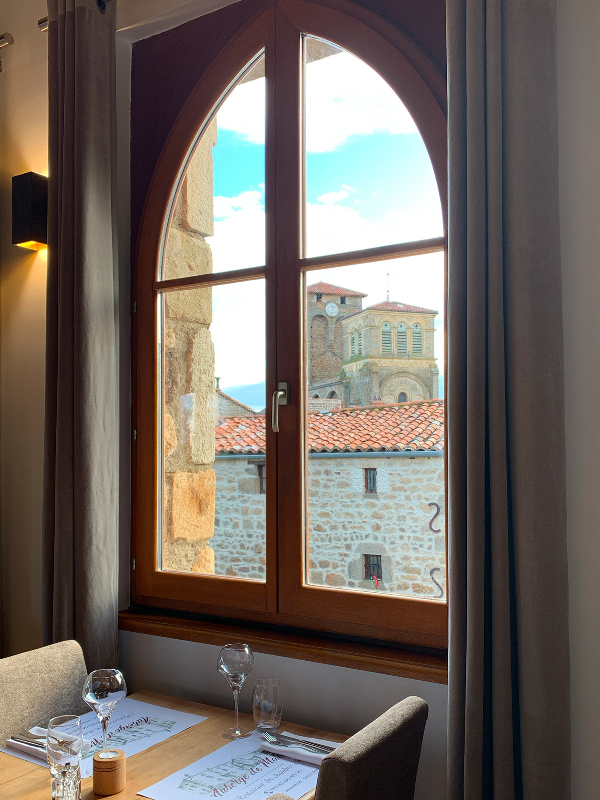
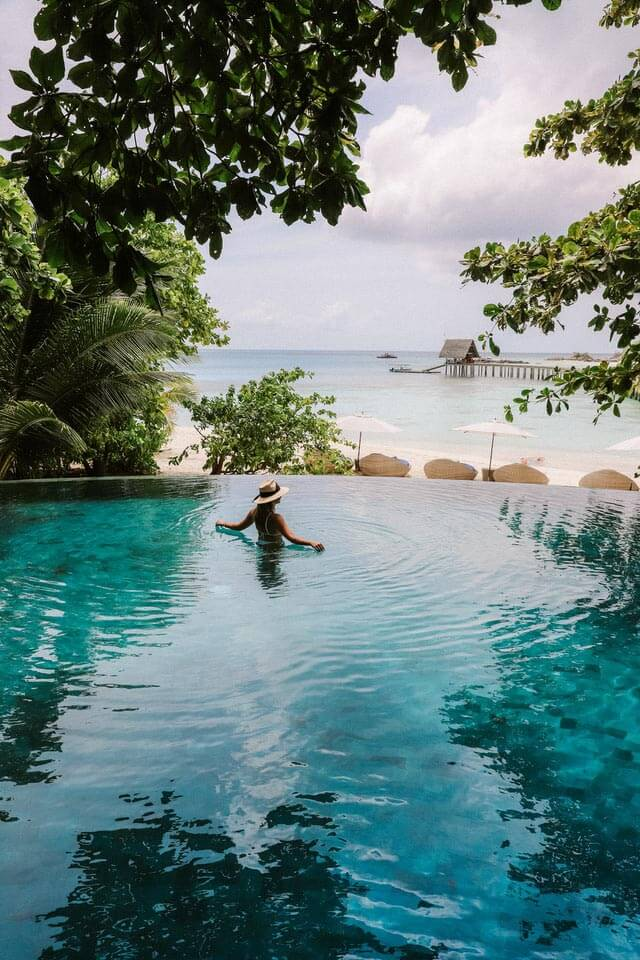

Bienvenue à l'Auberge de Marols
Située en plein coeur du Forez et perché à 827 mètres

La commune de Marols est située dans le département de la Loire et de la région Rhône-Alpes. Marols fait partie du Classement des « Village de Caractère » de la Loire depuis 2011
Habité par un peu plus de 400 habitants, ce village de caractère médiéval accueil 15 artistes (titre Village d’artistes obtenu en 2013) dont 7 résidents toute l’année au sein de Marols. Quelques bâtiments sont à noter comme l’église Saint Pierre, la porte fortifiée, les remparts, ainsi que la Chapelle Saint Roch.
Faire une réservation
L'Auberge

Lundi : 12h00 – 13h30 / 19h30 – 20h30
Mardi : 12h00 – 13h30 / 19h30 – 20h30
Mercredi : Fermé
Jeudi : 12h00 – 13h30 / 19h30 – 20h30
Vendredi : 12h00 – 13h30 / 19h30 – 20h30
Samedi : 12h00 – 13h30 / 19h30 – 20h30
Dimanche : 12h00 – 13h30 / Fermé
Le restaurant ferme ces portes à 15h00 pour le service du midi et 22h30 pour le service du soir.
Ces horaires sont données a titre indicatif et peuvent varier selon la fréquentation.
ATTENTION LES CHIENS NE SONT PAS ADMIS DANS NOTRE ÉTABLISSEMENT




